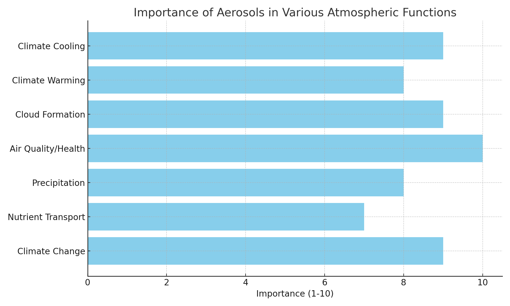

Welcome to the World of Aerosols
Aerosols are tiny particles that are suspended in the air, ranging in size from a few nanometers to several micrometers.
What are Aerosols?
Aerosols can be natural, such as dust, pollen, and sea salt, or human-made, such as pollutants from vehicles and industrial activities.
They play a critical role in the Earth's climate system, influencing the amount of solar radiation that reaches the surface and the formation of clouds.
Video: Introduction to Aerosols
Importance of Aerosols
Aerosols have a significant impact on the Earth's climate, air quality, and human health.
They can influence the formation of clouds, which in turn affect the amount of solar radiation that reaches the surface and the Earth's energy balance.
Aerosols are vital in climate regulation, affecting how much sunlight reaches the Earth, how clouds form, and how precipitation patterns change. They have profound impacts on air quality and human health, influencing respiratory and cardiovascular health in polluted regions. Their ability to transport nutrients across large distances and influence weather patterns makes them a critical element in the Earth’s atmospheric system. However, their role in climate change is complex and both mitigating and amplifying global warming depending on their type.
